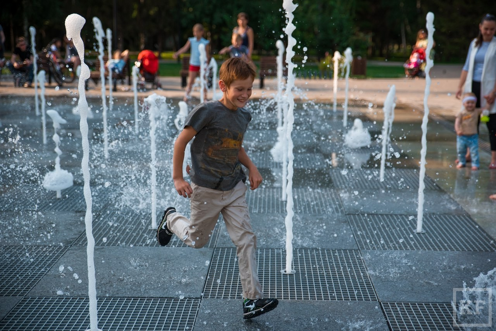
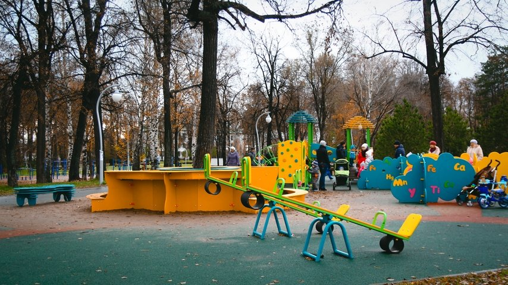
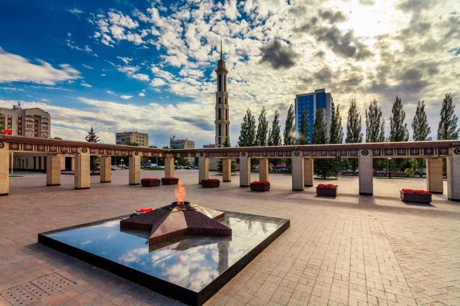
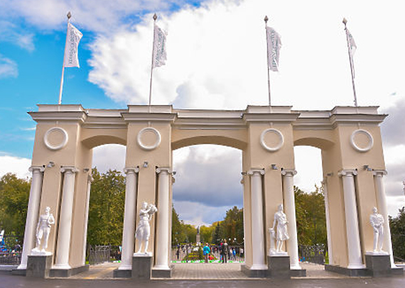
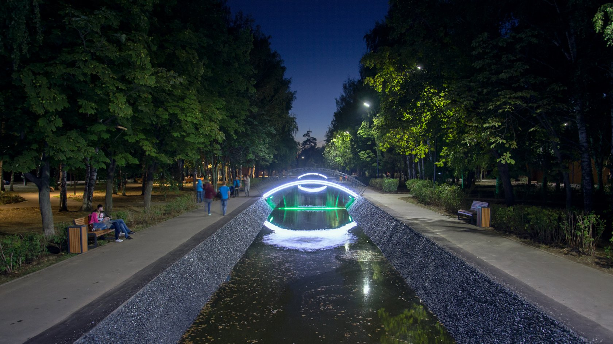
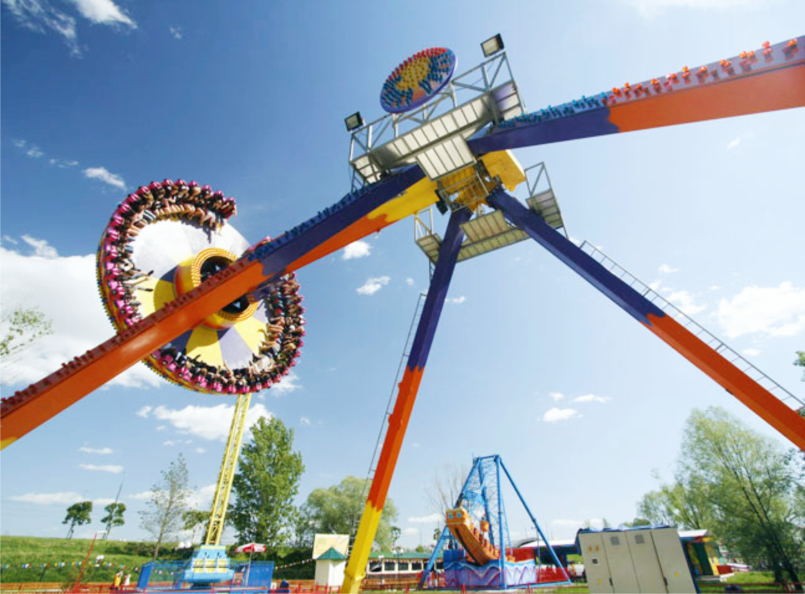

Парк им. М. Горького в Казани отлично подходит для активного досуга. В парке можно заниматься спортом – оборудована тренажерная зона, есть футбольное поле, веревочный городок Скай-парк. Показывают кино под открытым небом, проходят мастер-классы по йоге и танцам. Зимой на стадионе «Трудовые резервы» заливается каток, можно кататься на лыжах, ледянках, ватрушках.

Парк Сосновая роща — это один из самых больших парков Казани отлично подойдет любителям длительных прогулок по тенистым дорожкам. Помимо прогулок здесь можно кататься на велосипедах, заниматься спортом – для этого сооружена специальная зона для ворк-аута.

Мемориальный парк, посвященный Великой Отечественной войне. Центральное место занимает Мемориал с вечным огнем, на входе установлена 42-метровая стела Победы. Примечателен памятник «Скорбящая вдова».

Парк связан с историей самолетостроения в СССР. Внимание привлекает Аллея славы с бюстами выдающихся ученых и летчиков – Ломоносова, Менделеева и других. Есть фонтан и летняя эстрада. Проведена масштабная реставрация, сохранен советский стиль парка.

Ухоженная парковая зона и развитая инфраструктура – этот парк подходит для семейного отдыха. Для прогулок и фотосессий здесь есть озеро с каналом и узорными мостиками, для занятий спортом – беговые дорожки, футбольное и баскетбольное поля, для любителей животных – площадка для собак.

Этот парк рай для детей и любителей веселых каруселей. В Кырлае множество аттракционов (произведены в Италии) на любой вкус. Можно выбрать зону по нраву: семейную, детскую или экстрим. Также открыт для посещения контактный зоопарк, есть тир и автодром, волейбольная площадка.